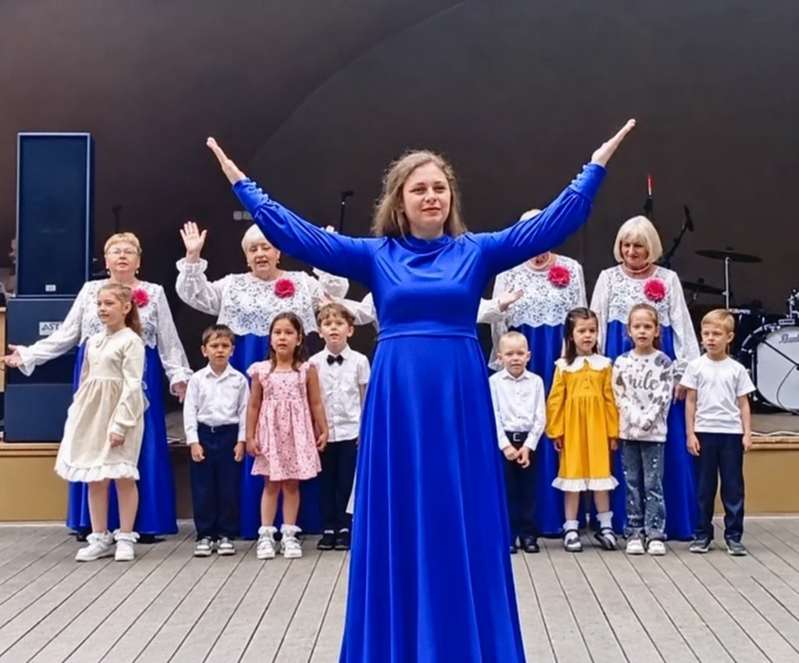

Песни из любимых историй
Разучиваем песни из мультфильмов и сказок, передаём настроение и характер героев.
Программы и стоимость · Детский хор
Дети 5–12 лет · Занятия в группе
Любимые песни из мультфильмов и сказок, знакомство с нотами и радость совместного пения.
Понедельник и пятница

«МУЛЬТИФОНИЯ» приглашает мальчиков и девочек от 5 до 12 лет. На занятиях дети знакомятся с хоровым пением, работают над голосом и слухом, учатся исполнять песни вместе.
В репертуаре — песни из советских, классических и современных мультфильмов и сказок. Знакомые мелодии помогают включиться в занятия и почувствовать себя частью музыкальной команды.
Занятия ведёт Заикина Татьяна Владимировна — педагог фортепиано и хорового пения.
Разучиваем песни из мультфильмов и сказок, передаём настроение и характер героев.
Работаем над певческим дыханием, ясным произношением и выразительным исполнением.
Учимся точнее интонировать, слышать себя и других, знакомимся с пением по нотам.
Постепенно осваиваем сцену и поддерживаем друг друга в совместном исполнении.

Педагог хора
В 2003 году окончила Сургутское музыкальное училище по специальности «Хоровое дирижирование». Квалификация — руководитель хора и творческого коллектива, учитель музыки.
Работала артистом хора «Светилен», пела в церковном хоре. Художественный руководитель хора «Северяночка».
Подробнее о педагоге →Позвоните, чтобы обсудить возраст ребёнка, его опыт и начало занятий. Новости хора и общение участников — в отдельной группе MAX.
Переход в группу MAX не отправляет заявку автоматически.
Студия в 2ГИС ↗